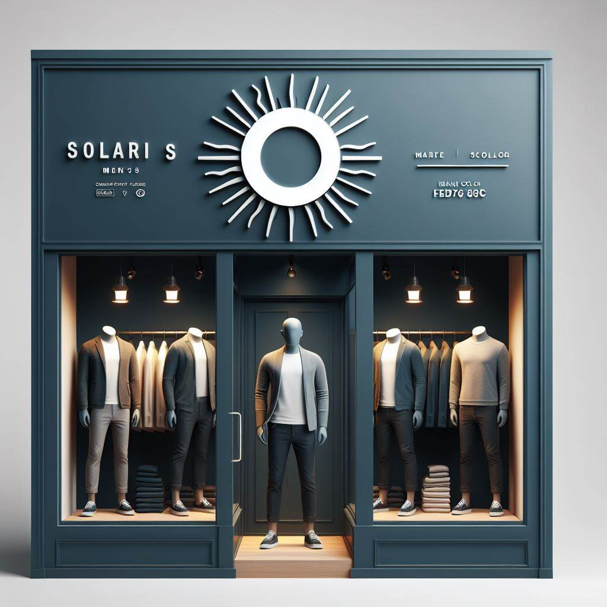

História
Desde 1995, Abelardo tem sido uma figura proeminente no mundo da moda em nossa comunidade. Sua jornada começou quando, aos 25 anos, ele decidiu fundar a "Solari’s". Com uma paixão ardente pela moda e um olhar afiado para as tendências emergentes, Abelardo rapidamente conquistou a confiança e a lealdade de seus clientes.
Missão
Nossa missão é proporcionar estilo e conforto aos homens modernos, oferecendo roupas de qualidade que refletem elegância e sofisticação. Através de um compromisso com a excelência e a inovação, buscamos não apenas satisfazer, mas superar as expectativas de nossos clientes, proporcionando uma experiência de compra única e memorável.
Visão
Nossa visão é de que a Solari's seja reconhecida como a marca preferida de moda masculina, conhecida pela inovação, qualidade e compromisso com o cliente. Buscamos constantemente liderar o mercado com designs contemporâneos e funcionais, mantendo um compromisso inabalável com a sustentabilidade e a responsabilidade social. A consequência é que nossas vendas cheguem a vários países.
Valores
Honestidade, qualidade, sustentabilidade e respeito aos clientes e ao meio ambiente são os pilares que guiam nossas ações. Valorizamos a transparência em nossos processos, aprimorando continuamente nossa cadeia de suprimentos. Acreditamos que ao agir com integridade e respeito, construímos relacionamentos duradouros com nossos clientes e comunidades.